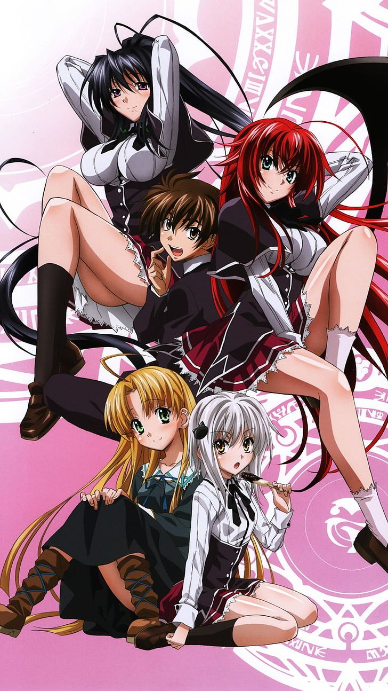
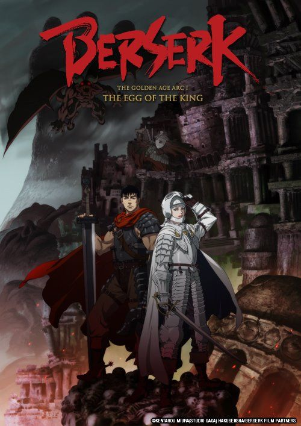

1.Domestic Girlfriend

Natsuo Fujii is hopelessly in love with his teacher, Hina Tachibana...
Premise
Natsuo Fujii is hopelessly in love with his teacher, Hina Tachibana. Trying to move on, he agrees to a mixer. There he meets an odd girl, Rui, who invites him to sneak out. She takes him to her house and asks him to have sex with her. Natsuo, frustrated that his love will not bear fruit anyway, loses his virginity to her. The next day, Natsuo's dad tells him that he wants to remarry and his prospective partner is coming to their house that evening. As the door swings open, Natsuo is taken aback to discover that Tsukiko Tachibana, the woman his father plans to marry, has two daughters: his longtime crush, Hina, and her younger sister, Rui.
Setting
Domestic Girlfriend tells the story of Natsuo and his forbidden love towards his first love, who is forced to break up when discovered. In the void left, Natsuo embarks on a new romantic journey with his stepsister, the girl he lost his virginity to. The story delves into the controversial and complex issues of romantic relationships that involve student-teacher dynamics and step-sibling bonds, while also highlighting the themes of youth, family, friendships, learning, growing up, career, happiness and trust.
Characters
Natsuo Fujii (藤井 夏生, Fujii Natsuo)
Natsuo, a 17-year-old high school student, harbors aspirations of becoming a novelist. However, he guards his creative talents as a well-kept secret, concealed from his friends and classmates. During his lunch breaks, he often retreats to the rooftop to nurture his passion for writing. It's on this rooftop that he crosses paths with Hina Tachibana, a new English teacher at the school. She becomes his source of inspiration for him, and he falls deeply in love with her. However, their relationship is exposed, and Hina is forced to end it. In his desolation, Natsuo discovers solace in his classmate and stepsister, Rui Tachibana.Hina Tachibana (橘 陽菜, Tachibana Hina)
Hina is the high school English teacher of Natsuo, who meets her for the first time at the school’s rooftop, a place she frequented to find solace when dealing with her own inner conflicts. Hina becomes a source for inspiration for Natsuo, who develops a deep crush on her. However, Hina also becomes Natsuo’s stepsister after her mother remarries with Natsuo's father.
Rui Tachibana (橘 瑠衣, Tachibana Rui)
Rui is a high school student who eventually develops feelings for Natsuo. She initially met him on an outing with friends, where they snuck out and both lost their virginities with one another, to unexpectedly become his stepsister after her mother remarries.Momo Kashiwabara (柏原 もも, Kashiwabara Momo)
Momo is a classmate of Rui and Natsuo. She is infamous for being flirtatious and sexually promiscuous (when asked, she estimates she hooked-up with over 30 boys, including one of Natsuo's friends), aside from her hobby of making weird plush dolls. She befriends Rui, who was warned not to deal with her and later sets her sights on Natsuo. She is from a broken family and attempted suicide once. Despite her appearance, she is revealed to be quite smart as she landed in the Top Ten during school exams.Miu Ashihara (葦原 美雨, Ashihara Miu)
Miu is the sole member of the school's Literature Club until the arrival of Natsuo, Rui, and Momo. She is portrayed as a shy and soft-spoken girl with a sense of strictness when they are in the library. She has a crush on her Japanese teacher Kiriya at high school, but she is too shy to confess her feelings to him.Akihito Fujii (藤井 昭人, Fujii Akihito)
He is the father of Natsuo. He began to date Tokiko Tachibana, knowing his wife died 10 years ago. He becomes stepfather of Hina and Rui after marrying her.Tokiko Tachibana (橘 都樹子, Tachibana Tokiko)
She is the mother of Hina and Rui. She began to date Akihito Fujii after her husband left her, ostensibly for another woman. She becomes Natsuo's step mother after marrying him.Fumiya Kurimoto (栗本 文哉, Kurimoto Fumiya)
He is Natsuo's best friend and adviser. He works part-time at a bar.Yuya Masaoka (柾岡 悠弥, Masaoka Yūya)
He is one of Natsuo's friends at school.Kazushi Kine (木根 和志, Kine Kazushi)
He is one of Natsuo's friends at school.Reiji Kiriya (桐谷 怜士, Kiriya Reiji)
A famous author who publishes under the pseudonym You Hasukawa. He also serves as the school's literature club advisor.Shu Hagiwara (萩原 柊, Hagiwara Shū)
Shu Hagiwara, a married 32 years old man, who is a researcher at a Biology lab at a university.Masaki Kobayashi (小林 昌樹, Kobayashi Masaki)
Masaki Kobayashi is a current bartender and owner of the cafe Fumiya Kurimoto works at and that Natsuo, Rui and Hina frequently visit. In the past, he was a rising star of the Yakuza and son of the head of a Yakuza branch. Sometime after falling in love with another Yakuza male of a rival branch, he would leave the Yakuza behind him in order to pursue happiness through his homosexual lifestyle. Kobayashi also acts as a counselor and adviser to his more favorite customers such as Fujii Natsuo and is always willing to help him and others, especially when it comes to love. He has a soft spot for cute males and makes no attempt to hide his desires for those he likes. Kobayashi also dresses brazenly in keeping for any event he attends, although he wears stockings while attending his cafe. He has a good friendship, both drinking and social, with Hina, who confides in him her love for Natsuo and her dedication of her life to making Natsuo happy regardless if he loves her back or not, and offers support to Hina when she needs it.Alex J. Matsukawa (松川・J・アレックス, Matsukawa Jei Arekkusu)
Alex is a high school student who is a member of the Literature Club. He is of American descent. He has a crush on Rui.2.Prison School

Hachimitsu Academy, one of the strictest girls' academies in Tokyo, has decided to admit boys into their system...
Hachimitsu Academy, one of the strictest girls' academies in Tokyo, has decided to admit boys into their system. Kiyoshi Fujino is one of these new boys, but he discovers to his shock that he and his four friends—Takehito "Gakuto" Morokuzu, Shingo Wakamoto, Jouji "Joe" Nezu, and Reiji "Andre" Andou—are the only male students among 1,000 girls. The draconian laws that are still in place make the school even worse, which punishes even the most minor infractions with a stay in the school's prison. The five boys all commit voyeurism in the school's bathing area with the lecherous philosophy of "all for one, one for all". Their capture and "arrest" by the Underground Student Council causes the five boys to receive an ultimatum: either stay a month in the school's Prison Block or be expelled. The boys are incarcerated in the Prison Block together and Kiyoshi is overwhelmed by the discovery that all the other boys are masochists that revel in the punishments handed to them by their attractive but vicious supervisors.
Characters
Main characters
Kiyoshi Fujino (藤野 清志, Fujino Kiyoshi)
Kiyoshi enrolled from the same middle school as Shingo. He is the first boy in Hachimitsu Academy to make contact with a girl when he befriends Chiyo, whom he develops feelings for. Although not very bright, he often comes up with successful plans when placed under high amounts of pressure. Due to several embarrassing mishaps, he becomes a regular target of Hana's affections while in prison. So far, he is the only one of the five boys to have been sent to prison more than once. When the ASC takes over during his second imprisonment, he becomes an ally to Mari, who is also a prisoner.
Takehito Morokuzu (諸葛 岳人, Morokuzu Takehito)
Takehito, nicknamed "Gakuto", is an eccentric, glasses-wearing, nerdy student, having enrolled from the same middle school as Joe. He has a deep interest in the Three Kingdoms and speaks in an old-fashioned manner, often referring to himself in third person as "yours truly." While in prison, he is a regular target of Meiko's abuse. Despite his perverted behavior, he is shown to be an excellent strategist who employs tactics referenced from famed generals of either the Three Kingdoms or other ancient battles, a skill that has proven very useful in most of their plans. His love interest is Mitsuko.
Shingo Wakamoto (若本 真吾, Wakamoto Shingo)
Shingo is a pessimistic student who looks like a delinquent. His love interest is Anzu, and he is shown to be a strong pessimist. After Kiyoshi's breakout attempt, he completely disowns and singles him out until after the USC tricks him into breaking out.
Jōji Nezu (根津 譲二, Nezu Jōji)
Jōji, nicknamed "Joe", is the "misfit" of the five. He is interested in ants, usually conceals his face with a hoodie, and is very physically weak, suffering from a bloody cough caused by a non-fatal form of severe stomatitis. Joe attended the same middle school as Gakuto. His love interest is Sato.
Reiji Andō (安堂 麗治, Andō Reiji)
Reiji Andō, nicknamed "Andre," is an overweight boy with an interest in extreme masochism. He is fixated on Meiko and constantly craves "punishment" from her. He later develops strong feelings for Risa, which Kate takes advantage of.
Underground student council
Mari Kurihara (栗原 万里, Kurihara Mari)
Mari is the president of the underground student council. She is the daughter of Hachimitsu Academy's chairman and the sister of Chiyo. A cold and calculating figure who seeks to uphold the school's traditions and rules. From the very beginning she immediately despises the boys, and the chairman's decision of integrating the academy. Much of this stems from her own resentment of her father's perverted behavior. In middle school, Mari helped Meiko stand up for herself when she was bullied by Kate, and the two have remained close friends ever since. She, like the rest of the Kurihara family, employs a strange philosophy to judge one's character. Her philosophy is, "Anyone who likes crows isn't all bad."
Meiko Shiraki (白木 芽衣子, Shiraki Meiko)
Meiko is the towering bespectacled vice president of the underground student council. She is put in charge of watching over the boys while they are in prison. In middle school, she was bullied for her large breasts. The strongest student in the school, and proficient in Judo, Meiko is a harsh disciplinarian over the boys, and often punishes them for the slightest infraction, with Gakuto being a popular target. Although a powerful and intimidating figure, she deeply fears displeasing Mari, which manifests itself in body-wide excessive sweating. Similarly, she enjoys performing calisthenics, and is often seen comically performing odd exercises with a large puddle of sweat underneath her. Aside from working out, she has been shown to have a knack for cooking. Because of her voluptuous/athletic physique, her school uniform barely manages to hide her body often leading to comical wardrobe malfunctions.
Hana Midorikawa (緑川 花, Midorikawa Hana)
Hana is the secretary of the underground student council. She mostly ends up in the worst situations with Kiyoshi, whom she eventually develops feelings for. She is also an adept martial artist, often utilizing her karate skills to brutally punish the boys if Meiko's harsh punishment does not work. Although she seems composed and competent, she is actually incredibly childish and understands little of boys or and fails to adapt to situations she does not expect. After her release from prison, she acts as Mari's spy for the Above Ground Student council.
Aboveground student council
Kate Takenomiya (竹ノ宮 ケイト, Takenomiya Keito)
Kate is the president of the aboveground student council and Mari's rival from middle school. She is the one who refers the USC to a prison sentence when they are found guilty of sabotaging the boys' sentence. She then continues to torment the USC once in prison. Proficient in aikido, and a master manipulator, Kate manages to turn the entire school against the USC, and quickly becomes a ruthless and persistent adversary to Mari and the boys, when they decide to help them. In the anime, she is seen in the epilogue of the final episode, narrating the Underground Student Council's prison sentencing to the chairman.
Risa Bettō (別当 リサ, Bettō Risa)
Risa is the vice president of the aboveground student council. She harbors a strong love for Andre and employs sadistic techniques to please him. Because of this, she develops a strong dislike for Meiko. She is also shown to be very skilled at kendo, capable of fighting off both Meiko and Hana, as well as a proficient motorcyclist in spite of her young age and minor status. In the anime, she is seen in the epilogue of the final episode, threatening Meiko should she attack Kate for demeaning Mari.
Mitsuko Yokoyama (横山 みつ子, Yokoyama Mitsuko)
Mitsuko is the secretary of the aboveground student council and Anzu's cousin. She has romantic feelings for Gakuto and is highly clumsy, which Kate often exploits. Kiyoshi refers to her as the "'Rube Goldberg' of Klutzes" because of her clumsiness. She writes yaoi manga as a hobby. In the anime, she is seen in the epilogue of the final episode, reaching for a book at the same time as Gakuto in the library.
Other characters
Chairman Kurihara (理事長, Rijichō)
He is the chairman at Hachimitsu Academy and father of Mari and Chiyo. He is wealthy but perverted. He often sympathizes with the boys. He is a self-proclaimed "ass-man", keeping various photos of female posteriors in his office, even looking at them while scheduling appointments with other characters. He, like the rest of the Kurihara family employs a strange philosophy to judge one's character. His philosophy is, "Anyone who likes butts isn't all bad".
Chiyo Kurihara (栗原 千代, Kurihara Chiyo)
Chiyo is Kiyoshi's classmate and watches sumo wrestling as a hobby. Kiyoshi has a crush on her, and she has one on him. She is Mari's sister and has deep respect for her. She, like the rest of the Kurihara family employs a strange philosophy to judge one's character. Her philosophy is, "Anyone who likes sumo wrestling isn't all bad". At the end of the series, she replaces Mari as the president of the Underground Student Council.
Anzu Yokoyama (横山 杏子, Yokoyama Anzu)
Anzu is a former spy for the Underground Student Council and Mitsuko's cousin. She has romantic feelings for Shingo, and is a year older than him.
Satō (佐藤)
A student at Hachimitsu Academy; the love interest of Joe. She unwittingly stops Joe from returning to imprisonment. She only appears in the OVA.
Mayumi Tanaka (田中 マユミ, Tanaka Mayumi)
Chiyo's best friend who is most often seen in her company, and aided her in warning the boys of their impending expulsion.
3.High School Of the Dead

The story follows a group of high school students and the school's nurse as they deal with the worldwide catastrophic event known as the "Outbreak"
As the cast tries to survive the zombie apocalypse, they must also face the additional threats of societal collapse, in the form of dangerous fellow survivors, and the possible decay of their own moral codes. Starting from the high school, the students escape into town where they must deal with a corrupt teacher and his students. They check their homes for survivors, and pick up a little girl and a dog. Later, they hole up at a mall, travel through a police station, and eventually make their way to an elementary school that is supposedly a safe zone.
Characters
Main characters
Takashi Komuro
Takashi Komuro (小室 孝, Komuro Takashi) is a 17-year-old second-year student of Fujimi High School and the male protagonist and viewpoint character of the series. He and Rei are childhood friends and also in the same class. When they were children, Rei and Takashi made a promise to get married someday, but because of his indecisiveness, Rei started dating his friend, Hisashi. At the beginning of the series, when he notices the zombies attack the teachers at the front gate he rushes to Rei's side. When Hisashi turns into a zombie, Takashi kills Hisashi with a blow to the head, causing Rei to accuse Takashi of jealousy. Takashi proceeds to leave, admitting to her accusation in his thoughts, but Rei holds him back and apologizes; he responds with a hug.[ch. 1]
Rei Miyamoto
Rei Miyamoto (宮本 麗, Miyamoto Rei) is Takashi Komuro's classmate with orange-brown hair and reddish brown eyes. Before the events of the series, Rei made a pinky promise to marry Takashi, but because of his indecisiveness, Rei started dating Hisashi. Rei is upset that Takashi kills Hisashi after he becomes a zombie, but when Takashi proceeds to leave her, she quickly retracts her words and pulls him back.[ch. 1] In chapter 12, Rei tells Takashi that girls like guys that are cute and caring. When Takashi replies that he is not either of those she says that's why she likes him and does not want him to be with any other girls.[ch. 12] Rei despises Mr. Shido, mainly because Shido held her back a year at school and caused trouble for her father
Saeko Busujima
Saeko Busujima (毒島 冴子, Busujima Saeko) is a third-year student at Fujimi High School with dark violet hair and bright blue eyes. As the president of the school's kendo club Saeko carries a bokken (wooden sword). Saeko is introduced as a calm and collected girl with pride in her skills; she kills an infected student out of mercy.[ch. 2] Her father is abroad somewhere for a martial arts tournament
Saya Takagi
Saya Takagi (高城 沙耶, Takagi Saya) is a second-year student at Fujimi High School with pink hair styled in twin tails. She is the daughter of an influential uyoku dantai (right-wing) politician. A self-proclaimed genius, Saya uses her knowledge and deductive capabilities to help the group escape from harm, being among the first to conclude that "they" were attracted to only sound. Despite coming from a prestigious family, she despised her parents, who she thought had given up on finding her, but reconciles with them during the raid on the family estate.
Kohta Hirano
Kohta Hirano (平野 コータ, Hirano Kōta) is a 16-year-old second-year student at Fujimi High School who appears to be just a wimpy overweight guy with glasses, but is actually a gun enthusiast.[ch. 2,11] He credits this to a visit to America, where he trained with a former Delta Force member for a month.[ch. 6][a] In the beginning of the story, Saya finds Kohta cringing in the hallway as students run about in a panic.[ch. 1] They hide in a classroom where Hirano is able to put together a nail gun rifle powered by gas cartridges.[vol. 5:extra,ch2] Kohta has an unrequited crush on Saya.
Shizuka Marikawa
Shizuka Marikawa (鞠川 静香, Marikawa Shizuka) is a nurse at Fujimi High School. At the beginning of the story, Marikawa is nearly killed by a student-turned-zombie but is saved by Saeko Busujima. She has a rather ditsy personality, and her large boobs and butt size is often used as a comical element in the story.[ch. 6,26,29] She is close friends with Rika Minami, who works as a sniper on the prefectural police Special Assault Team, and she even house-sits for her.
Alice Maresato
Arisu Maresato (希里 アリス, Maresato Arisu, "Arisu Maresato" in the anime) is a seven-year-old girl whom Kohta and Takashi rescue from the zombie horde after her father-(a newspaper reporter) is killed by members of a household who would not allow them shelter.[ch. 7] She has a generally positive attitude, as Takashi and Saeko comment how she has "done well" in coping with the loss.[ch. 10] In some of the chapters, she and Zeke scout the area for the group. In the English dub of the anime, she goes by the name Arisu.[12] According to a bonus chapter, she is the next door neighbor of Takashi's friend, Imamuru.
Other characters
Hisashi Igo
Hisashi Igo (井豪 永, Igō Hisashi) is a second year Fujimi High School student and Rei Miyamoto's classmate and boyfriend; he and Takashi are friends. He refers to the zombies as "them" since they are not quite like the ones seen in movies, and that becomes the name for any zombies the main group encounters in the series. On the way out of class, he is bitten by an infected teacher. After rising as one of "them", Takashi delivers a fatal blow to his head.
Koichi Shido
Koichi Shido (紫藤 浩一, Shidō Kōichi) is the teacher of Class 3A. Rei Miyamoto is disgusted by him and Saeko Busujima says his name with a scowl, which hints of his villainous character, which is affirmed when he leaves behind a student who sprained his ankle and even kicks him back towards a group of pursuing zombies, and says there is no point in keeping weaklings alive.[ch. 2] Kohta Hirano affirms that Shido used to allow bullies to beat Kohta up as he watched with glee
Rika Minami
Rika Minami (南 リカ, Minami Rika) is the chief of first squadron in the prefecture police, and an expert sniper in the Special Assault Team, who, along with the Special Security Team, are deployed to clear the nearby airport of any zombie stragglers and to rescue any survivors. She is friends with Shizuka Marikawa, and lets her house-sit when she goes on assignments. At the airport mission, her partner sacrifices himself by using jet fuel in a tanker to immolate the zombies. She manages to get in contact with Shizuka, who informs her that they "stayed over and borrowed her weapons and things," before the communication is cut by an EMP surge.[ch. 5,13] She is last seen as she returns to the city to find Marikawa.
Zeke
Zeke (ジーク, Jīku), known in the English anime dub as Zero, is a mixed-breed puppy that joins the group when Takashi rescues Alice. He is named after the Mitsubishi A6M Zero fighter plane, which was also nicknamed Zeke by the Allied forces during World War II.[ch. 7,8]
Soichiro Takagi
Soichiro Takagi (高城 壮一郎, Takagi Sōichirō) is Saya's father. He is the leader of a right-wing nationalist group in the Tokonosu district. He showed his leadership to the survivors when he rallies them to kill the zombies in order to save Japanese society from collapsing, and publicly kills his zombified subordinate.[ch. 10,11]
Yuriko Takagi
Yuriko Takagi (高城 百合子, Takagi Yuriko) is Saya's mother. She worked in New York City as a Wall Street stock broker until she met and married Soichiro Takagi. The Takagi family fortune rose significantly due to her business connections. When the zombies breach the estate, she gives Saya her Luger P08 pistol, and then proceeds to assist her husband in fighting the horde.
Miku Yuuki
Miku Yuuki (夕樹 美玖, Yūki Miku) is a second-year Fujimi High student, who schoolmate Morita says is one of the sexiest girls in school.[vol. 5:03extra] She sides with Koichi Shido when he takes over the bus, and participates in their debauchery. When Yamada questions Shido, Yuuki suggests they kick him off the bus.[ch. 11,12] She also helps Shido enter the Takagi estate by flirting with one of the guards, but is forced to leave after Shido is expelled from the estate.[ch. 14] She later appears alongside Shido at the entrance to Shintoko Third Elementary School.
Asami Nakaoka
Asami Nakaoka (中岡 あさみ, Nakaoka Asami) is a young traffic enforcer for Tokonosu Higashi Police Station; she guards a group of survivors at a nearby mall. She refers to herself in the third-person. Asami's authority quickly wanes amongst the survivors until Kohta Hirano and Takashi Komuro arrive and build up her confidence by giving her a Smith & Wesson Model 37 pistol (the standard-issue firearm for Japanese police officers). She develops a liking for Kohta after he subdues a guy named Shimada who wanted to sexually assault Shizuka Marikawa. Asami later accompanies Takashi to help obtain blood plasma for a sick survivor and is forced to mercy kill one of the mall survivors, Tamaru, when he gets bitten by "them". Asami's superior officer is Matsushima, who leaves for the police station before Takashi and the group arrive. Asami is shocked to find Matsushima who is walking as a zombie. She dejectedly runs to the mall's rooftop but is encouraged by Kohta to go with him and his friends
Tadashi Miyamoto
Tadashi Miyamoto (宮本 正, Miyamoto Tadashi) is Rei's father and a police officer who first appears in chapter 30. Previously, only his voice was heard on Rei's cellphone in a bad one-way connection. [ch. 2] Prior to the outbreak, Miyamoto has been investigating fraud and corruption relating to Koichi Shido's family. When he learned that his daughter Rei was held back a year because of his actions he apologized to Rei but continued his investigation with the goal of arresting the Shidos.[ch. 14] Tadashi leaves a message on the whiteboard at the police station for all surviving police to head towards Shintoko Third Elementary School for a scheduled evacuation by the SDF.
Kiriko Miyamoto
Kiriko Miyamoto (宮本 貴理子, Miyamoto Kiriko) is Rei's mother and one of the neighborhood survivors. When she goes out for supplies the neighbors shut her out. Happily, she meets Rei and the group and they head to Shintoko Third Elementary School to join the other survivors. Kiriko has worked as a police officer and was nicknamed Precinct Kiriko for her ferocity. She uses her husband's spear with some apparent expertise.
4.High School DxD
Kuoh Academy (駒王学園, Kuō Gakuen, alt. Kuou Academy) is a former all-girls school that has recently turned co-ed, but it has a secret...
Unknown to normal humans, angels (天使, Tenshi), fallen angels (堕天使, Datenshi) and devils (悪魔, Akuma) comprise part of the student population. One of these students, Issei Hyodo, is a lecherous second-year human student who lives a peaceful life. After an ordinary school day, Issei is suddenly asked out on a date by a girl named Yuma Amano. After their date, Yuuma brings Issei to a local park and makes a startling request that she wants him to die for her. She reveals herself as Raynare, a fallen angel, and she tries to kill him. Using her summoning card, Rias Gremory, a buxom third-year student at Kuoh Academy, revives him. Issei wakes up the next morning, thinking that the events that occurred were all just a dream. Immediately after being attacked by another fallen angel and waking up, he notices Rias naked in his room. Rias reveals to Issei her true identity as a devil and says that as a result of his death at the hands of Yuuma, she has reincarnated him as a devil, making him her faithful servant in the process.
5.The Testament of Sister New Devil

Basara Tojo is a high school student studying at Hijirigasaka Academy when his father Jin suddenly gets "remarried" and asks Basara if he wants to have sisters.
Basara meets his two new, cute stepsisters, Mio Naruse and Maria Naruse. After his father departs overseas, Basara quickly finds that the two sisters are actually part of a demon clan, and he is meant to be with the hero clan. Mio, a Demon princess, forcibly attempts to make a master and servant contract with Basara, but Maria has it end up being the opposite, with Basara as the master. Basara then keeps getting into ecchi scenarios, largely to protect Mio from being pursued by other demons who are after her heritage, which is passed down from the former Demon Lord Wilbert.
Characters
Main
Basara Toujou (東城 刃更, Toujou Basara)
Basara Tojo is a Year 1 high school student at Hijirigasaka Academy and the protagonist of the story. As a member of a hero clan, he grows up in a hidden rural village. Basara wields the formerly cursed sword Brynhildr. Basara is the only son of Jin Tojo, formerly acknowledged to be the 'Strongest Hero' in the village.
Mio Naruse (成瀬 澪, Naruse Mio)
Mio, the titular heroine, is a beautiful red-haired Demon princess and heir of the former Demon Lord, Wilbert, as well as niece to the current Moderate Faction leader, Ramsus. She grows up in the care of some of Wilbert's followers ignorant of her heritage. Mio becomes aware of her heritage and inherits her true father's abilities after his death only six months before meeting the Tojo family. She and Maria are hiding from the current Demon Lord Leoheart's minions who want to kill her for the powers that she inherited.
Maria Naruse (成瀬 万理亜, Naruse Maria)
Maria is a succubus and is Mio's follower and guardian. Maria loves Mio like a sister and is willing to give her own life to protect her. However, true to her succubus nature, Maria likes to tease and trick Basara whenever she can, but she genuinely likes him and considers him to be her older brother. Nevertheless she seems to enjoy getting Basara in perverted situations, especially since she is aware of him being in love with Mio.
Yuki Nonaka (野中 柚希, Nonaka Yūki)
Yuki is a member of the Hero Tribe and Basara Tojo's childhood friend, who speaks in the Kansai dialect. She is rather calm and serious person, who only shows her more affectionate side to Basara as she has had a crush on him since they were children, to which he also reciprocates. She is one of the observers watching Mio Naruse and is the Class Representative of Basara and Mio's class in Hijirigasaka Academy.
Kurumi Nonaka (野中 胡桃, Nonaka Kurumi)
uki's younger sister and also a member of the Hero Tribe. Kurumi has a hostile attitude towards Basara, but after being saved by Basara during their fight she realizes what Yuki knew all along—that he continues to blame himself for not being able to control his ability which caused the accident five years ago—and develops a crush on him as well. She specializes in summoning spirits.
Zest (ゼスト, Zesuto)
Another demon, made by Zolgia to be his right hand, sent to keep an eye on Mio alongside Lars, who is originally envious of the pacts that Basara has with Maria, Mio and Yuki, since they care for each other. She later joins Basara's group as the fifth female and third demon girl following Zolgia's defeat and her defection to the Moderate faction.
Supporting
Jin Tojo (東城 迅, Tojo Jin)
Jin is Basara's father, and he is also known as the War God. He has two wives - one is a Demon Lord and the other one is an Angel (Nephilim). He knows of and sympathizes with Mio's situation and that is why he decides to protect her. As a foreign correspondent Jin is largely absent from the Tojo home. His strength is so famous that it kept the Demon Lord Wilbert at bay and almost defeated the Demon Lord Leohart.
Yahiro Takigawa (Lars) (滝川 八尋 (ラース), Takigawa Yahiro (Rāsu))
A masked Demon sent to spy on Mio who disguises himself as her and Basara's classmate, but after being defeated and nearly killed, he befriends Basara and they form an uneasy alliance. He is capable of creating dolls to take his place and fights using barriers. Mio's foster parents were his caretakers in the orphanage he grew up in, so he agreed to help Basara on the condition he could kill Zolgia himself, to fulfill his wish and avenge his caretakers.
Takashi Hayase (早瀬 高志, Hayase Takashi)
A member of the Hero Tribe who wields the cursed spear, Byakko. He is Basara's childhood friend, but has resented him since the incident five years ago. He strongly believes that Basara has forgotten the incident and that any who side with a demon needs to be killed.
Chisato Hasegawa (長谷川 千里, Hasegawa Chisato)
The school nurse at Hijirigasaka Academy. She is aware of the supernatural things happening around the students and tends to give Basara advice. A wise and caring person, it is revealed that she was Basara's mother's best friend, and they were close enough to be sisters in all but blood. After Basara's mother dies, Hasegawa dedicates her life to protecting Basara. It is also revealed that she is not human but in fact a god, hinting that Basara's mother was one as well, therefore making him a Demigod. She later falls in love with Basara and enters into a secret relationship with him. At the end of the series, she marries Basara along with the rest of his harem and she becomes pregnant with Basara's child.
Kyōichi Shiba (芝恭一, Shiba Kyōichi)
A member of the Hero Tribe who is released from prison to accompany Takashi and Kurumi as a spectator. While very powerful, he respects Basara's ability and desire to protect Mio, Maria, and Yuki, since he is in love with them. Basara states that he is so powerful that if he is a genius then Shiba is over-talented.
Zolgear (ゾルギア, Zorugia)
The Demon who killed Mio's adoptive parents and Zest's former master, and who plans to turn on Leohart and obtain the Demon King's powers for himself by kidnapping Mio without Leohart's knowledge. After he is defeated, Lars captures, tortures, and finally kills him in the presence of Basara.
Leohart (レオハート, Reohāto)
The current Demon Lord and younger brother of the demon Riara.
Mamoru Sakasaki/Ornis (坂崎 守 / オルニス, Sakazaki Mamoru/Orunisu)
A teacher at Hijirigasaka Academy. Initially assumed to be a human, it is revealed that he is actually a god like Hasegawa. He is intent on killing Basara, who he believes has reached beyond his stature through earning Hasegawa's affection, and believes that killing him will bring Hasegawa back to heaven. After using Kurumi as a hostage to prevent Basara from attacking, he then succeeds in cutting off Basara's sword arm. However, this causes the sword to react and release the spirit of Brynhildr, one of the most powerful Valkyries. In this form Basara's arm grows back, his hair changes color and his right eye glows. He moves so fast that Sakasaki cannot even see him, and he cuts off the top of his foot using Banishing Shift, which he could earlier only use as a counter, not as an attack. Basara attempts to kill Sakasaki but Hasegawa intervenes. She then reveals that she always knew that Ornis has replaced the real Sakasaki. Using her full power, Hasegawa kills Ornis and has Basara take the credit for killing the god.
6.Monster Girl Doctor

Taking place after a long war between humans and monsters ended, the story focuses on the human Dr. Glenn Litbeit and his lamia assistant, Saphentite "Sapphee" Neikes, as they run a clinic in the city of Lindworm, which is home to many species of monsters living alongside humans.
Characters
Glenn Litbeit
Glenn is a human male from a merchant family from the far east, who specialized in medicines during the war. He strives to become a doctor for the monster population of the city of Lindworm. His calm demeanor and quick mind and focus allow him to treat everyone from a harpy girl to an immortal dragon; this tends to make him have a cadre of girls vying for his affection, much to the annoyance of Sapphee.
Saphentite Neikes
Glenn's childhood friend and assistant in the clinic who goes by the nickname of "Sapphee". She organizes the clinic and monitors the fairies that assist them. She is a rare albino lamia, so she has to wear a special outfit whenever she goes out into the sunlight. Her family were also merchants during the war, allying with the Litbeit family to aid the wounded and ensure medicine production on both sides. She was sent to the Litbeits as a political hostage, where she met Glenn and fell in love with him; however, her family are also well known assassins, and if the Litbeits were to betray them she was set to kill Glenn's family. She also has a low tolerance for alcohol.
Tisalia Scythia
A centaur who is the sole heiress of Scythia Transportation. A high ranked arena fighter, she was on a losing streak until Glenn realized her problem and was able to help her by giving her horseshoes. She is very open about her infatuation for Glenn and is not afraid to say so in public, mostly to annoy Sapphee, whom she considers a friend and romantic rival.
Lulala Heine
A mermaid who sings at the Merrow Waterways in order to provide financial support for her family. Even while suffering from inflammation of her gills due to staying above and out of water too much, she continued singing. She saved a boy from drowning and Glenn saves her from drowning due to her gills. She develops feelings for Glenn after he saved her and treated the inflammation.
Arahnia Taranterra Arachnida
An arachne who is a fashion designer, sewing clothes with her own silk. She is a friend of Sapphee and has known her for a long time, and has made several of her sunblocking outfits due to arachne silk being very durable. Her skill is so good, she can do minute stitchwork swiftly and efficiently. She tries to seduce Glenn originally to get a response from Sapphee and Tisalia, but soon realizes that she has fallen for him herself.
Skadi Dragenfelt
he chairwoman and head council representative of Lindworm. She was the dragon that was able to bring the humans and monsters together before they could destroy each other completely, bringing an end to the war and founding the city as an experiment to see if monsters and humans can co-exist. She is hundreds of years old, yet has the body of a young girl. She dresses head to toe in robes and a veil so few have seen her face, but they are used to hide a parasitic condition. Due to said condition she rarely speaks above a whisper, so her words are relayed by Kunai (in a very loud tone).
Kunai Zenow
Lady Skadi's personal assistant and bodyguard. A rare flesh golem from the east, she was taken in by Skadi and became entirely devoted to her, and takes her job seriously. However, due to her nature, she has been known to lose parts if she is damaged.
Illy
A harpy who was captured by bandits and forced to lay eggs, which were to be illegally sold. However, she had an impacted egg from stress until Glenn helped her while Skadi and Sapphee held off the remaining bandits. Afterward, she and the others went to a nearby harpy village to live.
Memé Redon
A cyclops who works at the Kuklo Workshop. She has dry eye issues because hers is larger than the others; however, it gives her more clarity in very fine work such as detailing and making surgical instruments like scalpels and needles that the hospital and Glenn use. She was inspired by Skadi to try to make things people could use to live. She also likes wearing Gothic Lolita outfits created by Arahnia. While she seems to have feelings for Glenn, she often feels embarrassed when she get closer to him.
Kay Arte
A centaur who is one of Tisalia's attendants. She was a war orphan who was adopted by the Arte family, servants of the Scythia family.
Lorna Arte
A centaur who is one of Tisalia's attendants. Like Kay, Lorna was a war orphan who was adopted by the Arte family. Due to her being more sensitive than Tisalia and Kay, she suffers from self-esteem issues and needs a more controlling hand than Kay. She is unknowingly into binding, which actually calms her down.
Dione Nephilim
A rare gigas who lives near the harpy village and sees Glenn for a head cold while he was performing examinations at the village. Due to her size, she moves very slowly and carefully so not to injure any smaller creatures, but every step causes earthquakes and landslides. Though young for her race, she still is hundreds of years old and has known Cthulhy and Skadi for a long time. She is friends with Illy, who goes to her mountaintop to visit her.
Cthulhy Squele
A Cecaelia who is the head medical doctor of the Lindworm Central Hospital. Cthulhy is the mentor and primary teacher of both Glenn and Sapphee, and she had them start the clinic in order to expand their learning of medicine and to groom Glenn to take over for her one day. She has known Skadi for a long time, hinting that she is hundreds of years old, despite looking like she is in her 30s. She enjoys openly flirting with Glenn, much to the annoyance of Sapphee.
Aluloona Loona
An alraune who is a member of the city council. Second-in-command to Skadi, she is in charge of agriculture. She rarely ever meets with men, due to her race's nymphomaniac nature. Aluloona punishes would-be assaulters by giving them to her less restrained daughters; they don't survive.
Molly Vanitas
he former shoggoth that was attached to Skadi. Once collected, she joined the skeleton of the former supervisor of the dead district and is working to make it a tourist attraction with the help of the undead residents. She uses a shovel as a weapon in order to keep the more unruly monsters in line. She is also highly interested in Glenn, but more as a lover than a mate.
Sioux Litbeit
Glenn's sister from the east who suffers from Demonitis. She began sprouting horns from her forehead, which proves her family has more than just human blood in their ancestry, which lead her to overheating if she becomes flustered or overexerts herself until Glenn was able to help her. She currently works in the red light district as a patrol member. She considers Sapphee as her sister, and is friends with Memé and Arahnia. Due to all the women flocking to Glenn, she takes it upon herself, by orders of her mother, to find Glenn the most suitable to be his wife.
7.Berserk
Guts was born from a hanged corpse and raised as a mercenary by his abusive adoptive father, Gambino, following the death of his adoptive mother, Shisu...
After being forced to kill Gambino in self-defense, Guts fled his mercenary group and became a wandering mercenary. His reputation attracts the attention of Griffith, the leader of a mercenary group called the Band of the Hawk, which he makes Guts join after defeating him. The kingdom of Midland hires the Band to aid them in their war against the Chuder Empire, and Guts learns of Griffith's desire to rule his own kingdom and of the pendant he possesses, called the Behelit. After Nosferatu Zodd spares them, he warns Guts that he will die for being Griffith's friend. As Griffith befriends Midland's nobility and the king's daughter, Charlotte, Guts begins to develop feelings for Casca. After overhearing Griffith confess to Charlotte that he only considers someone with their own dream as a friend, Guts decides to leave the group to find his own dream, a decision that sends Griffith into a downward spiral that culminates in his arrest after he seduces Charlotte. He loses the Behelit while being subjected to torture, and the Midland army declares the Hawks as criminals. Soon after, a mysterious being known as the Skull Knight warns Guts that his actions have triggered an Eclipse and, after learning of the Hawks' predicament, he rejoins them to rescue Griffith. After rescuing Griffith, the Hawks learn that his torture has left him incapable of leading them. When Griffith regains his Behelit, it uses his blood to initiate the Eclipse, a convergence of the physical and astral realms. During the Eclipse, the Hawks encounter a quartet of archdemons known as the Godhand, who reveal that Griffith has been chosen as their fifth member and can only do so if he sacrifices his comrades, which he accepts. After being branded with sigils that mark them for sacrifice, the Hawks are slaughtered by the Godhand's Apostles—humans who, like Zodd, gained power by sacrificing their loved ones—and only Guts and Casca survive. Griffith, who has become the fifth Godhand, Femto, rapes Casca, and Guts loses his left forearm and right eye while trying to save her; although the Skull Knight rescues them, the ordeal traumatizes Casca. After learning from the Skull Knight that the Brands of Sacrifice make them targets for beings of darkness, Guts leaves Casca in the care of the blacksmith Godo, his adoptive daughter Erica, and Rickert, the youngest member of the Band of the Hawk, who survived because he was not present at the Eclipse. After Godo gives Guts a new sword, Dragonslayer, and Rickert gives him a prosthetic left arm, Guts begins hunting the Apostles while being pursued by the Demon Infant, which is revealed to be his and Casca's unborn child that became deformed after Femto raped her. Two years later, having killed many Apostles and become known as the Black Swordsman, Guts is joined by the elf Puck, but they are captured by Farnese, the captain of the Holy See Church's Holy Iron Chain Knights, who believes that Guts is a harbinger of the apocalypse. Guts escapes after saving Farnese and returns home to Godo, where he learns that Casca has wandered off. His search for her takes him to the ruined city of St. Albion, which the Godhand have prepared as the site for a ceremony to give one of their own a physical form and which has become a refuge for refugees fleeing the Kushan Empire's armies. Guts saves Casca from the Holy See bishop Mozgus as the souls of the dead attack the city and is joined by Farnese, her bodyguard Serpico, and the young thief Isidro. Meanwhile, an Apostle living under St. Albion consumes the Demon Infant and uses its body to restore Griffith to physical form. After Guts fights Griffith and Zodd at Godo's home, Griffith realizes that some traces of the Demon Infant remain within him. Hoping to find a land safe from the demons, Guts decides to travel with Casca to Puck's homeland of Elfhelm on the island of Skellig, allowing Isidro, Farnese, and Serpico to follow him out of fear that he will lose control of himself to his dark impulses, which are embodied as the Beast of Darkness within his mind, with Farnese becoming Casca's primary caretaker. Meanwhile, Griffith forms a second Band of the Hawk with Zodd and other Apostles to save Midland from the Kushan Empire, which is led by their emperor Ganishka, a rogue Apostle. Guts' party encounters the witch Flora and her apprentice Schierke while saving a village from trolls, and Flora gives him the Berserker Armor, which increases his power but risks pushing his body beyond its limits and being consumed by his inner darkness. Flora is later killed, and after escaping, Guts' party encounters the Moonlight Child, who expresses affection for Guts and Casca before disappearing after the full moon passes. Meanwhile, the Skull Knight warns Guts to not abuse the Berserker Armor's power while assuring him that Elfhelm's inhabitants can heal Casca's mind. While Guts and his party secure a ship called the "Seahorse", which is captained by Farnese's fiance, Prince Roderick, to reach Elfhelm, the Emperor transforms and causes the physical and astral realms to merge. With the blessing of Charlotte and the Holy See, Griffith establishes the city of Falconia to provide refuge for the Midlanders and humanity from the creatures that manifested after the realms merged. After recruiting a merrow girl named Isma, Guts' party reaches Elfhelm; its elf ruler, Danann, helps Farnese and Schierke begin a training, and succeed in restoring Casca's mind. The Skull Knight introduces Guts to the creator of the Berserker Armor and reveals his past with the Godhand and its leader, Void. The Moonlight Child later reappears; it is revealed that he is the Demon Infant, who can take control of Griffith's host during a full moon. Griffith regains control of his host and abducts Casca while destroying the island's spirit tree, unleashing spirits that attack the island and causing Danann, Isma, and the other magical creatures (except for Puck and Ivalera) to disappear into the Astral Realm. As the survivors flee on the Seahorse, Guts breaks down in despair. Griffith returns to the mainland with Casca, heading to Falconia, where she remembers her companions and attempts to escape, only to lose consciousness. Guts is taunted by visions of his inner darkness that urge him to give in, but he passes out as Kushan warriors invade the ship and are revealed to be under the command of Silat, the leader of the Bakiraka warrior clan, and Daiba, a magician and former servant of Ganishka. Among the soldiers is Rickert, who had escaped from Falconia along with the Kushan deserters. The Kushan escort Guts and the rest of the party to their capital and Guts is imprisoned. Daiba informs them that Falconia's army has appeared on the borders of the Kushan Empire and that the attack on Elfhelm is part of a wider campaign by Falconia to have Griffith rule the world. As such, Daiba orders that Guts and his party, Rodrick, the ships' crew, and Elfhelm's surviving sorcerers be placed under his command as the empire prepares for war with Falconia.
8.Maken Ki

Takeru Ooyama has enrolled at Tenbi Academy, a private prep high school that converted from all-girls to co-ed. Hoping to have a life full of ogling pretty girls, he reunites with childhood friend Haruko Amaya, who shows him around school.
However, he learns that the school is for students who possess magical and spiritual energies called Elements and who wield crafted weapons known as Makens. The students engage in school sanctioned combat matches that showcase their powers. While his own ability and Maken is not apparent at first, Takeru soon finds himself surrounded by girls, including Inaho Kushiya, an attractive girl who says she's his fiancée, and Kodama Himegami, a popular blonde who says she wants to kill him. He joins the Security Committee.
Main Characters
Takeru Ooyama (大山 タケル, Ōyama Takeru)
The main protagonist of the series, Takeru is a first-year high schooler who enrolls at Tenbi Academy after having attended an all-boys middle school. His childhood friend and fellow disciple, Haruko Amaya, also attends the school as does Inaho Kushiya, who claims that she is his fiancée. He ends up sharing his room with the two girls, as well as Kodama Himegami.
Haruko Amaya (天谷 春恋, Amaya Haruko)
A second-year student who is the student council vice president, and the head of one of the dorms. She is a childhood friend of Takeru Ooyama, whom she trained with at his family's dojo, and for whom she harbors romantic feelings for although she is unwilling to admit it.
Kodama Himegami (姫神 コダマ, Himegami Kodama)
A petite, blonde-haired second-year student who is part of the security committee (kenkeibu) of Maken-ki, which officiates the duels at school.
Inaho Kushiya (櫛八 イナホ, Kushiya Inaho)
The self-proclaimed fiancée of Takeru Ooyama. She feels strongly for Takeru, and although he does not remember her much, she has decided to wait until he fully does.
9.Kanokon

Kanokon's story revolves around Kouta Oyamada, an extremely innocent young first-year high school student who moves from the country to the city and thus transfers to Kunpō High School.
On his first day at his new school, he meets a beautiful second-year female student named Chizuru Minamoto. Chizuru asks him to meet her alone in the music room. When he arrives, she tells him that she is in love with him and accidentally reveals to him that she is in fact a fox spirit. Chizuru constantly and openly flirts with Kouta, even in front of others, embarrassing him greatly. Soon after the story begins, a wolf spirit named Nozomu Ezomori transfers into Kouta's school and class. From day one, she is all over Kouta, serving to embarrass him more and causing Chizuru to become annoyed at her new competition for Kouta's affection.
Characters
Main characters
Kouta Oyamada
Kouta is the protagonist of the story. Since he's been orphaned following the loss of his deceased parents; he used to live with his grandfather before moving from the countryside to the city for his first year of high school, and on his first day of school discovers that Chizuru Minamoto a second-year high school girl is actually a kitsune
Chizuru Minamoto
Chizuru is second-year female student at Kouta's school. On the outside she appears to be a well endowed teenage girl, but she is in fact a powerful kitsune.
Nozomu Ezomori
Nozomu is a first-year female transfer student at Kouta's school. She has short light ash blonde hair and is in fact a 200-year-old wolf spirit who lives by herself in an expensive but empty penthouse apartment, where she always sleeps naked on the floor.
10.Kiss x Sis
.jpg)
Keita Suminoe is a third-year Japanese middle school student living with his father, stepmother, and older twin stepsisters, Ako and Riko.
Since the remarriage of their parents at childhood, the siblings have always been affectionately close and supportive of one another. Nowadays the trio see their opposites in a noticeably less platonic fashion; Ako and Riko frequently flirt and lust after Keita while, much to his stress, he fights the urge to give in to them.
Characters
Keita Suminoe
Keita Suminoe is a 15-year-old third-year middle school student[4] who is part of a blended family after his father remarried some years previously (Keita's mother having died when he was young).
Ako Suminoe
Bright and cheery, Ako Suminoe is a 16-year-old[5] first-year high school student who is one of two stepsisters to Keita and twin sister to Riko.
Riko Suminoe
Riko Suminoe is a 16-year-old first-year high school student and second stepsister to Keita. Though less academically accomplished than her twin, Riko is cunning, insightful, crafty, an active member of the Disciplinary Committee, and boldly open about her personal life and sexuality.
Miharu Mikuni
Miharu Mikuni is a third-year middle school student who enters into the same high school class as Keita. A fairly quiet and unassuming character, she comes to his attention when she delivers Keita his entrance exam results; having passed, he joyfully befriends her.
Mikazuki Kiryū
Peppy and outgoing, Mikazuki Kiryu is a second-year middle school student and the younger sister of Yuzuki Kiryu. She enters her third year of middle school when Keita starts his first year in high school.
Yūzuki Kiryū
Yuzuki Kiryu is a recently hired 24-year-old[8] homeroom and Japanese History teacher at the fictional Gakushū Senior High, and the older sister of Mikazuki.
Toda Edogawa
He is Keita's best friend from middle school. He is jealous of Keita's relationship with his sisters and other girls. He is also a pervert, and hopelessly infatuated with the Suminoe sisters.
Chiba Okubo
Another friend of Keita's from school.